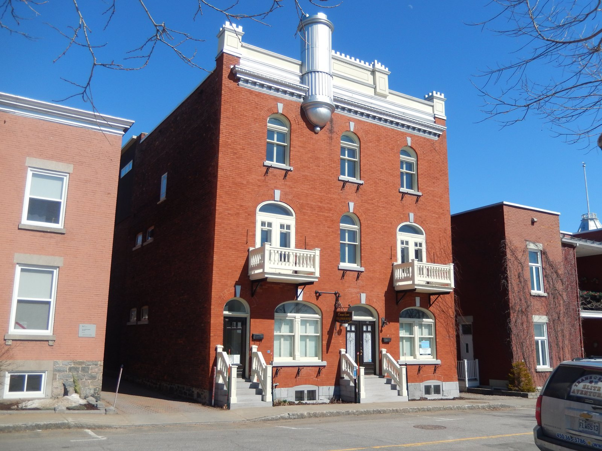

Immeuble à logements — the plex of superposed flats L'immeuble à logements / l'immeuble de type « plex »

34-44 rue des Casernes, in the site patrimonial de Trois-Rivières (March 2020) — an immeuble à logements multiples of about 1910, named by the MCC's Plan de conservation as a fine example of the site's commonest roof form, the flat roof. © Fralambert, Wikimedia Commons, CC BY-SA 4.0 — https://commons.wikimedia.org/wiki/File:34-44,_rue_des_Casernes.jpg
When coal tar made the waterproof flat roof possible, the urban dwelling became a stack. Two or three storeys of superposed flats, each with its own door off the street reached by its own stair, put up at speed on cramped lots by the first property developers the city had seen, to house the mill workers. The oldest of them still carry the Boomtown's gallery-and-balcony arrangement — the fiche calls that their filiation — while the parapet turns from an applied cornice into stepped brick with friezes, and then into curves and counter-curves.
The plex coexisted with the Boomtown house and then supplanted it about 1910; it is the house that matches the accelerated urban growth of 1910 to 1930, and by the 1920s the Patri-Arch Synthèse records it as the principal workers' dwelling in Trois-Rivières. The Depression and the Second World War left only an impoverished version, and it faded slowly in favour of the apartment block with a single common entrance. The interwar plex is a near relation of proto-rationalist architecture — the regular-framed, plainly detailed brick manufactories and warehouses of 1850-1890 — and it is the rational, simple, easily built and economical side of it that ties the plex to that current. The same superposed-dwelling form is followed through the canonical layer under `plex-superposed-units`.
| Tenure / plan | triplex |
|---|---|
| Storeys | 2–3 |
| Roof form | flat |
| Roof pitch | – |
| Window proportion | vertical |
| Principal cladding | clay-brick, concrete-block |
| Roofing | tar-and-membrane flat roof |
| Garage | none |
| Lot width | – |
| Front setback | – |
| Side setback | – |
| Front yard green | – |
What Ville de Trois-Rivières says about this type
- Le secteur regroupe également des bâtiments associés à l'industrialisation, comme des maisons boomtown et des immeubles à logements, caractérisés par un volume cubique, un toit plat et une ornementation modeste.
- les immeubles de logements (caractérisés par un volume cubique, un toit plat, une élévation de deux à trois étages, une corniche ornementée ainsi que des balcons en bois ou en fer forgé)
- Les habitations de type « plex » sont ces maisons à logements multiples qui comportent deux (duplex), trois (triplex), quatre (quadruplex) ou plusieurs unités d'habitation superposées qui ont des entrées indépendantes. Ce type de logement côtoie, puis supplante l'architecture Boomtown vers 1910. C'est la maison qui correspond à la croissance accélérée des villes de 1910 à 1930.
- Un nouveau matériau, le goudron, obtenu par la distillation du charbon, amène la construction du toit plat, à bassins ou à égout intérieur. L'habitation urbaine devient un immeuble à logements superposés et le volume cubique s'affirme sans détour. Les parapets à corniches appliquées cèdent la place aux parapets de brique à gradins et à frises, ou panneaux de brique décoratifs, apparus timidement vers 1910. Les plus anciens reprennent d'ailleurs la disposition des balcons et galeries propres aux maisons Boomtown, marquant ainsi leur filiation.
- Avec ces bâtiments, on assiste à une première manifestation d'envergure des promoteurs immobiliers qui réalisent sur des terrains exigus des maisons contiguës, construites en vitesse pour loger les ouvriers qui alimentent en main d'œuvre l'industrialisation rapide de la ville.
- Built by property developers on cramped lots, as contiguous houses put up at speed to house the workers who supplied the labour for the city's rapid industrialisation.
- Inside the declared site these are the îlots résidentiels — narrower parcels, more densely occupied, evidence of a stronger urban pressure during industrialisation than in the other sectors, though a tree cover survives in the back yards.
- The RPCQ's second residential register for the declared site — "des immeubles d'habitation construits sur des lots étroits", against the maisons cossues.
- Cubic-looking volume, generally of two or three storeys.
- Several dwellings, each with its own direct entrance from outside.
- Numerous exterior extensions — balcony, gallery, stair. On the plainest examples these batteries of acrobatic stairs, balconies and galleries are the only decoration left.
- Many have polygonal or rectangular projections; some have galleries and balconies carried on brick piers, sometimes arcaded; others have a setback cutting re-entrant angles wholly occupied by galleries and balconies in loggia, on masonry supports so strongly stated that they redraw the cubic volume.
- Concrete foundations appear with this current.
- Volume d'aspect cubique, généralement de deux ou trois étages
- Plusieurs logements possédant une entrée extérieure directe
- Nombreux prolongements extérieurs : balcon, galerie, escalier
- Les prolongements extérieurs deviennent le trait spécifique de cette architecture. Chaque logement possède ainsi son entrée directe, accessible par un escalier (intérieur ou extérieur) et un balcon parfois imposants.
- Varied ornament — cornice, parapet, decorative banding, lintel, keystone, brick or stone insets.
- Parapets with applied cornices give way to stepped brick parapets with friezes, or decorative brick panels, appearing tentatively about 1910.
- Walls end in worked cornices of wood or metal, sometimes curved, sometimes with dentils and consoles, and often paired with parapets under cornices (1890-1915) or with scalloped parapets cut in curves and counter-curves (1910-1930).
- Many plexes carry construction dates or patriotic motifs moulded into cement insets set in the brickwork.
- Ornements variés : corniche, parapet, bandeau décoratif, linteau, clé de voûte, insertion de briques ou de pierre, etc.
- Segmental-arched openings are frequent, especially on the earliest plexes; later, lintels increasingly replace the segmental arches, in cement like the sills.
- Sash windows, often with a transom or decorative mullions; sometimes sash with casement storm windows, often tall and of six panes; the upper part sometimes forms a transom decorated with stained glass.
- Ouvertures à arc surbaissé fréquentes, fenêtres à guillotine, souvent avec imposte ou meneaux décoratifs
- Traditional materials — brick cladding, wood openings.
- Red or brown clay brick on many; concrete block imitating rusticated stone on others; limestone on a few exceptions.
- Rare sheet-metal claddings imitating rusticated stone need upkeep or rust will make them disappear.
- Matériaux traditionnels : parement de brique, ouvertures en bois
- Ce courant est composé de diverses tendances. Les maisons sont le plus souvent de volume cubique, à deux ou trois étages. Plusieurs disposent de saillies polygonales ou rectangulaires. Certaines résidences ont leurs balcons et galeries soutenus par d'intéressants piliers en brique, parfois à arcades, alors que d'autres comportent un décroché qui découpe des angles rentrants complètement occupés par des galeries et balcons en loggias, à supports maçonnés si fortement affirmés qu'ils redessinent un volume cubique.
- Plusieurs possèdent un parement en brique d'argile rouge ou brune, d'autres sont construites en bloc de béton, imitant la pierre à bossage, alors que quelques exceptions le sont en pierre calcaire. Les fondations en béton font leur apparition avec ce courant.
A naming caution the sources force. The Ville de Trois-Rivières catalogues TWO distinct currents here, and this record encodes the first — "Immeuble de type « plex »", where every dwelling has its own direct entrance from the street — and not the second, "Immeuble d'appartements", which the same fiche distinguishes explicitly: "Contrairement aux bâtiments de type « plex », les immeubles d'appartements possèdent une seule et même entrée commune à tous les logements." The RPCQ and the Plan de conservation, writing about the declared site, use the phrase "immeubles à logements" for buildings whose described characteristics — cubic volume, flat roof, two to three storeys, ornamented cornice, wood or wrought-iron balconies — match the plex. The record slug follows the ministerial phrase and the French name carries both, so that neither vocabulary is lost. The apartment block with one common entrance is a separate form and is not encoded here.
The exterior stair — why it is outside
- Prefer: where part of the brick cladding is redone, match the masonry colours carefully. Do not paint the brick or apply aluminium or vinyl cladding to it. When repointing, match the mortar to what is there, to avoid ugly demarcations.
- Avoid: levelling off the stepped parapets. Consolidate them instead, by bracing them solidly on the roof side.
- Avoid: altering the openings or blocking up the transoms.
- Avoid: aluminium cladding on the wall crowns and the balcony shelters — it distorts them by swelling the volume out of all proportion.
- Avoid: on contiguous or semi-detached houses, piecemeal renovation making changes for personal reasons at the expense of the aesthetic of the whole.
- Prefer: today's required 42-inch (1.07 m) guard height can be reached by adding a second handrail to the existing 36-inch (0.914 m) railing, without spoiling what is there. Avoid guards of cut-out prefabricated boards and handrails of too slight a section.
- Si une partie du parement de brique de ces maisons est refait, il importe de bien marier les couleurs de maçonnerie. Il faut éviter en outre de peindre la brique ou d'y appliquer des parements d'aluminium ou de vinyle. Lors d'un rejointoiement, il faut appareiller le mortier à l'existant afin d'éviter de créer des démarcations disgracieuses.
- Il faut éviter d'araser, ou niveler, les parapets à gradins. Il est préférable de les consolider en les appuyant solidement du côté de la toiture.
- Il convient de ne pas transformer les ouvertures ou murer les impostes.
- L'application d'un parement d'aluminium sur les couronnements de murs et les abris de balcons est à éviter, car il les dénature en gonflant démesurément le volume.
- Dans les cas de maisons contiguës ou jumelées, il faut éviter toute rénovation ponctuelle en apportant des modifications pour des motifs personnels, au détriment d'une esthétique d'ensemble.
- Il faut éviter d'utiliser des garde-corps en planches découpées et préfabriquées ainsi que des mains courantes de section trop faible. Les garde-corps de 42 pouces (1,07 m) de hauteur requis par la réglementation d'aujourd'hui peuvent être obtenus par l'ajout d'une deuxième main courante au garde-corps de 36 pouces (0,914 m) en place, sans déparer l'existant.
Same word elsewhere
- Shop-and-dwellings block on the commercial artery (Mercier–Hochelaga-Maisonneuve (borough of Montréal))
- Three-storey workers' plex (Mercier–Hochelaga-Maisonneuve (borough of Montréal))
- Apartment building (conciergerie) (Outremont (borough of Montréal))
- Apartment block with courtyard (Le Plateau-Mont-Royal (borough of Montréal))
- Plex — superposed dwellings (Québec City)
- Multi-dwelling building of plex type (Saint-Lambert)
- Three-storey plex with exterior stair (Verdun (borough of Montréal))
- Three-storey commercial block with dwellings above and alcove balconies (Verdun (borough of Montréal))
- Plex of the early 20th century (Villeray–Saint-Michel–Parc-Extension)
- Apartment building of the early 20th century — the conciergerie (Villeray–Saint-Michel–Parc-Extension)
- Plex of the mid-20th century (Villeray–Saint-Michel–Parc-Extension)
- Apartment building of the mid-20th century — the walk-up (Villeray–Saint-Michel–Parc-Extension)
- Plex of the second half of the 20th century — the « plex italien » (Villeray–Saint-Michel–Parc-Extension)
- Apartment building of the second half of the 20th century (Villeray–Saint-Michel–Parc-Extension)
- Interwar apartment house (Westmount)
Same form elsewhere
- Flat-roofed house (Lévis)
- Three-storey workers' plex (Mercier–Hochelaga-Maisonneuve (borough of Montréal))
- Plex — superposed dwellings (Québec City)
- Triplex with exterior stair (Rosemont–La Petite-Patrie (borough of Montréal))
- Duplex with exterior stair (Rosemont–La Petite-Patrie (borough of Montréal))
- Duplex with interior stair and paired entrances (Rosemont–La Petite-Patrie (borough of Montréal))
- Semi-detached duplex with rear garage, Art déco manner (Rosemont–La Petite-Patrie (borough of Montréal))
- Duplex with interior stair (Le Sud-Ouest (Montréal))
- Three-storey duplex (Le Sud-Ouest (Montréal))
- Triplex with interior stair (Le Sud-Ouest (Montréal))
- Duplex with exterior stair (Le Sud-Ouest (Montréal))
- Multiplex (Le Sud-Ouest (Montréal))
- Raised duplex (Le Sud-Ouest (Montréal))
- Triplex with exterior stair (Le Sud-Ouest (Montréal))
- Two semi-detached duplexes, or a three-dwelling building, with deep front balconies (Verdun (borough of Montréal))
- Row duplex of the 1950s (Verdun (borough of Montréal))
- Plex of the early 20th century (Villeray–Saint-Michel–Parc-Extension)
- Plex of the mid-20th century (Villeray–Saint-Michel–Parc-Extension)
- Plex of the second half of the 20th century — the « plex italien » (Villeray–Saint-Michel–Parc-Extension)
Same period elsewhere
- Family A company houses (models A1–A8) (Arvida (borough of Jonquière, Saguenay))
- Family B company houses (models B1–B4) (Arvida (borough of Jonquière, Saguenay))
- Family C company houses (models C1–C6) (Arvida (borough of Jonquière, Saguenay))
- Family D company houses (models D1–D5) (Arvida (borough of Jonquière, Saguenay))
- Family M houses (models M1–M11), regionalist neo-vernacular (Arvida (borough of Jonquière, Saguenay))
- Family F semi-detached houses (models F1–F18) (Arvida (borough of Jonquière, Saguenay))
- Families P, Q, S and T (paired and single models along boulevard du Saguenay and rues Powell, Neilson, Berthier, Parks, Joule) (Arvida (borough of Jonquière, Saguenay))
- Family R row houses (models R2–R4) (Arvida (borough of Jonquière, Saguenay))
- Families E, G, H, J, K, L, N, Y and Z (Arvida (borough of Jonquière, Saguenay))
- Wartime Housing Ltd. houses (Arvida (borough of Jonquière, Saguenay))
- Postwar bungalow (Baie-D'Urfé)
- Mansard house (Charlesbourg (Trait-Carré))
- Boomtown building (Charlesbourg (Trait-Carré))
- Cubic house (Four Square) (Charlesbourg (Trait-Carré))
- Industrial vernacular house (Charlesbourg (Trait-Carré))
- Vernacular cottage (Charlesbourg (Trait-Carré))
- Post-war residence (bungalow) (Charlesbourg (Trait-Carré))
- English summer villa on the lake shore (Dorval)
- Postwar bungalow (Dorval)
- Mixed-use building with a flat roof (édifice mixte à toit plat) (Gatineau)
- First-generation North American bungalow (bungalow nord-américain de première génération) (Gatineau)
- Side-gable duplex (duplex à mur pignon latéral) (Gatineau)
- Central-gable house (maison à pignon central) (Gatineau)
- Complex gabled-roof house (maison à toit complexe à pignon) (Gatineau)
- Mansard-roofed house with gable wall on the façade (maison à toit mansardé avec mur pignon en façade) (Gatineau)
- One-and-a-half-storey wooden matchstick house (maison allumette en bois d'un étage et demi) (Gatineau)
- Wood matchstick house of two to two and a half storeys (maison allumette en bois de deux à deux étages et demi) (Gatineau)
- Brick matchbox house, two to two and a half storeys (maison allumette en brique de deux à deux étages et demi) (Gatineau)
- Cubic house (maison cubique) (Gatineau)
- CIP executive's house (maison de cadre de la CIP) (Gatineau)
- Flat-roofed wood house (maison en bois à toit plat) (Gatineau)
- Flat-roofed brick house (maison en brique à toit plat) (Gatineau)
- L-plan house with a two-slope (gable) roof (maison avec plan en L à toit à deux versants) (Gatineau)
- English-revival stone house (Hampstead)
- Postwar detached house (Hampstead)
- Regency cottage (Île d'Orléans)
- Second Empire style and the mansard house (Île d'Orléans)
- Victorian eclecticism (Île d'Orléans)
- American vernacular cottage (Île d'Orléans)
- Arts and Crafts architecture (Île d'Orléans)
- Boomtown house (Île d'Orléans)
- Cubic house (Four Square) (Île d'Orléans)
- Modernism (Île d'Orléans)
- Québec regionalism (Île d'Orléans)
- Postwar bungalow (Lachine (borough of Montréal))
- Bourgeois brick house in the Victorian taste (Lachine (borough of Montréal))
- Brick duplex and triplex, detached or in continuous alignment (Lachine (borough of Montréal))
- Small one-storey brick house, wider than deep, with a crown (Lachine (borough of Montréal))
- The maison « Gameroff » — contractor-built house of the 1950s–1970s quarters (Lachine (borough of Montréal))
- Second Empire house (Lévis)
- Victorian house (Lévis)
- American vernacular house (Lévis)
- Mixed-use or commercial building (Lévis)
- Beaux-Arts house (Lévis)
- Boomtown house (Lévis)
- Cubic house (maison cubique) (Lévis)
- Flat-roofed house (Lévis)
- Arts & Crafts house (Arts & métiers) (Lévis)
- Wartime housing dwelling (Lévis)
- Modernist building (Lévis)
- Bourgeois residence of the cité, Beaux-Arts (Mercier–Hochelaga-Maisonneuve (borough of Montréal))
- Shop-and-dwellings block on the commercial artery (Mercier–Hochelaga-Maisonneuve (borough of Montréal))
- Three-storey workers' plex (Mercier–Hochelaga-Maisonneuve (borough of Montréal))
- Brick bungalow of the 1950s Mercier developments (Mercier–Hochelaga-Maisonneuve (borough of Montréal))
- Veterans' house, to the Wartime Housing Limited model (Mercier–Hochelaga-Maisonneuve (borough of Montréal))
- Garden City House (Town of Mount Royal)
- Faubourg House (Town of Mount Royal)
- Faubourg Apartment Block (Town of Mount Royal)
- Canadian House (Town of Mount Royal)
- New England House (Town of Mount Royal)
- New England Apartment Block (Town of Mount Royal)
- Georgian House (Town of Mount Royal)
- English Manor House (Town of Mount Royal)
- Bungalow (Town of Mount Royal)
- Cottage (Town of Mount Royal)
- Split-Level (Town of Mount Royal)
- Prairie House (Town of Mount Royal)
- Modern Apartment Block (Town of Mount Royal)
- Semi-detached single-family house (Outremont (borough of Montréal))
- Semi-detached duplex (Outremont (borough of Montréal))
- Detached single-family house (Outremont (borough of Montréal))
- Opulent detached residence (Outremont (borough of Montréal))
- Apartment building (conciergerie) (Outremont (borough of Montréal))
- Modern house on the flank (Outremont (borough of Montréal))
- Duplex without front setback (Le Plateau-Mont-Royal (borough of Montréal))
- Duplex with front setback (Le Plateau-Mont-Royal (borough of Montréal))
- Duplex with exterior stair (Le Plateau-Mont-Royal (borough of Montréal))
- Triplex with interior stair (Le Plateau-Mont-Royal (borough of Montréal))
- Triplex with exterior stair (Le Plateau-Mont-Royal (borough of Montréal))
- Multiplex (Le Plateau-Mont-Royal (borough of Montréal))
- Row urban house (Le Plateau-Mont-Royal (borough of Montréal))
- Apartment block without courtyard (Le Plateau-Mont-Royal (borough of Montréal))
- Apartment block with courtyard (Le Plateau-Mont-Royal (borough of Montréal))
- Small apartment building (Le Plateau-Mont-Royal (borough of Montréal))
- Postwar bungalow (Pointe-Claire)
- Cubique — massive symmetrical block, imposing gallery, low hipped roof (Pointe-Claire)
- Village Boomtown house, two storeys, flat or low-pitch roof behind a crown (Pointe-Claire)
- Veterans' house on the Wartime Housing Limited model, c. 1947 (Pointe-Claire)
- Boomtown house and shop-house (Québec City)
- Cubic house (Four Square) (Québec City)
- Flat-roofed faubourg house (Québec City)
- Industrial-vernacular cottage (Québec City)
- Neo-Queen Anne house (Québec City)
- Neo-Renaissance house and mixed-use block (Québec City)
- Neo-Tudor house (Québec City)
- Plex — superposed dwellings (Québec City)
- Apartment block with a central stairwell (Québec City)
- Arts and Crafts house (Québec City)
- Bungalow (Québec City)
- Camp and villégiature chalet (Québec City)
- Dutch Colonial Revival house (Québec City)
- International Style house (residential) (Québec City)
- Neo-Georgian house (Québec City)
- Prairie house (Frank Lloyd Wright inspiration) (Québec City)
- Wartime Housing house (Cape Cod) (Québec City)
- Maison shoebox (Rosemont–La Petite-Patrie (borough of Montréal))
- Triplex with exterior stair (Rosemont–La Petite-Patrie (borough of Montréal))
- Duplex with exterior stair (Rosemont–La Petite-Patrie (borough of Montréal))
- Duplex with interior stair and paired entrances (Rosemont–La Petite-Patrie (borough of Montréal))
- Detached house of the Cité-Jardin du Tricentenaire (Rosemont–La Petite-Patrie (borough of Montréal))
- Semi-detached duplex with rear garage, Art déco manner (Rosemont–La Petite-Patrie (borough of Montréal))
- Conciergerie (Rosemont–La Petite-Patrie (borough of Montréal))
- Mansard-roofed house of Second Empire influence (Saint-Lambert)
- Queen Anne style house (Saint-Lambert)
- Boomtown house with false mansard (Saint-Lambert)
- Boomtown house with crown (parapet or cornice) (Saint-Lambert)
- Cubic (Four Square) house (Saint-Lambert)
- House of Arts and Crafts influence (Saint-Lambert)
- Multi-dwelling building of plex type (Saint-Lambert)
- The "King Cottage" (Saint-Lambert)
- The modern house (including the bungalow) (Saint-Lambert)
- Two-storey clapboard village house of the îlot villageois (Sainte-Anne-de-Bellevue)
- Garden City Press workers' house (Sainte-Anne-de-Bellevue)
- Postwar bungalow (Sainte-Anne-de-Bellevue)
- English summer villa on the lake shore (Senneville)
- Arts and Crafts country estate (Senneville)
- Postwar bungalow (Senneville)
- Boomtown house (Le Sud-Ouest (Montréal))
- Duplex with interior stair (Le Sud-Ouest (Montréal))
- Three-storey duplex (Le Sud-Ouest (Montréal))
- Triplex with interior stair (Le Sud-Ouest (Montréal))
- Urban house (Le Sud-Ouest (Montréal))
- Apartment house (Le Sud-Ouest (Montréal))
- Duplex with exterior stair (Le Sud-Ouest (Montréal))
- Multiplex (Le Sud-Ouest (Montréal))
- Raised duplex (Le Sud-Ouest (Montréal))
- Triplex with exterior stair (Le Sud-Ouest (Montréal))
- Apartment building (lift-served) (Le Sud-Ouest (Montréal))
- Conciergerie (walk-up apartment block) (Le Sud-Ouest (Montréal))
- Town house (post-1960 project housing) (Le Sud-Ouest (Montréal))
- Veterans' house (Le Sud-Ouest (Montréal))
- Lower-town company house (Ross and Macdonald, 1918–1923) (Témiscaming)
- Upper-district company house (Somerville, 1925–1950) (Témiscaming)
- Maison cossue of rue Saint-Louis (Vieux-Terrebonne)
- Neoclassical Québécois stone house (Vieux-Terrebonne)
- Small-gabarit vernacular village house of the Bas-de-la-Côte (Vieux-Terrebonne)
- Three-storey plex with exterior stair (Verdun (borough of Montréal))
- Two semi-detached duplexes, or a three-dwelling building, with deep front balconies (Verdun (borough of Montréal))
- Three-storey commercial block with dwellings above and alcove balconies (Verdun (borough of Montréal))
- National Housing Act house — 1½ storeys, brick, to prize-winning plans (Verdun (borough of Montréal))
- Residential tower, île des Sœurs (Verdun (borough of Montréal))
- Row duplex of the 1950s (Verdun (borough of Montréal))
- Freestanding greystone mansion (Ville-Marie (Montréal))
- Greystone terrace (Ville-Marie (Montréal))
- Shoebox of the early 20th century (Villeray–Saint-Michel–Parc-Extension)
- Boomtown house (Villeray–Saint-Michel–Parc-Extension)
- Plex of the early 20th century (Villeray–Saint-Michel–Parc-Extension)
- Apartment building of the early 20th century — the conciergerie (Villeray–Saint-Michel–Parc-Extension)
- Shoebox of the mid-20th century (Villeray–Saint-Michel–Parc-Extension)
- Post-war house (Villeray–Saint-Michel–Parc-Extension)
- Post-war semi-detached house (Villeray–Saint-Michel–Parc-Extension)
- Plex of the mid-20th century (Villeray–Saint-Michel–Parc-Extension)
- Apartment building of the mid-20th century — the walk-up (Villeray–Saint-Michel–Parc-Extension)
- Greystone row house (Westmount)
- Greystone triplex with exterior stair (Westmount)
- Mansard-roofed house of Second Empire influence (Westmount)
- Queen Anne house (Westmount)
- Richardsonian Romanesque house (Westmount)
- Semi-detached brick house (Westmount)
- Eclectic prestige house of the summit (Westmount)
- Tudor Revival house (Westmount)
- Arts and Crafts semi-detached house (Westmount)
- Interwar apartment house (Westmount)
- Modernist residential tower (Westmount)
Same style elsewhere
- Boomtown building (Charlesbourg (Trait-Carré))
- Cubic house (Four Square) (Charlesbourg (Trait-Carré))
- Industrial vernacular house (Charlesbourg (Trait-Carré))
- Vernacular cottage (Charlesbourg (Trait-Carré))
- Mixed-use building with a flat roof (édifice mixte à toit plat) (Gatineau)
- Side-gable duplex (duplex à mur pignon latéral) (Gatineau)
- One-and-a-half-storey wooden matchstick house (maison allumette en bois d'un étage et demi) (Gatineau)
- Wood matchstick house of two to two and a half storeys (maison allumette en bois de deux à deux étages et demi) (Gatineau)
- Brick matchbox house, two to two and a half storeys (maison allumette en brique de deux à deux étages et demi) (Gatineau)
- Flat-roofed wood house (maison en bois à toit plat) (Gatineau)
- Flat-roofed brick house (maison en brique à toit plat) (Gatineau)
- American vernacular cottage (Île d'Orléans)
- Boomtown house (Île d'Orléans)
- American vernacular house (Lévis)
- Mixed-use or commercial building (Lévis)
- Boomtown house (Lévis)
- Flat-roofed house (Lévis)
- Village Boomtown house, two storeys, flat or low-pitch roof behind a crown (Pointe-Claire)
- Boomtown house and shop-house (Québec City)
- Flat-roofed faubourg house (Québec City)
- Industrial-vernacular cottage (Québec City)
- Plex — superposed dwellings (Québec City)
- Camp and villégiature chalet (Québec City)
- Boomtown house with false mansard (Saint-Lambert)
- Boomtown house with crown (parapet or cornice) (Saint-Lambert)
- Multi-dwelling building of plex type (Saint-Lambert)
- Boomtown house (Le Sud-Ouest (Montréal))
- The 1908 reconstruction block — brick, flat-roofed, built all at once (Trois-Rivières)
- Boomtown house (Trois-Rivières)
- Cubic house (Four-square) (Trois-Rivières)
- Shoebox of the early 20th century (Villeray–Saint-Michel–Parc-Extension)
- Boomtown house (Villeray–Saint-Michel–Parc-Extension)